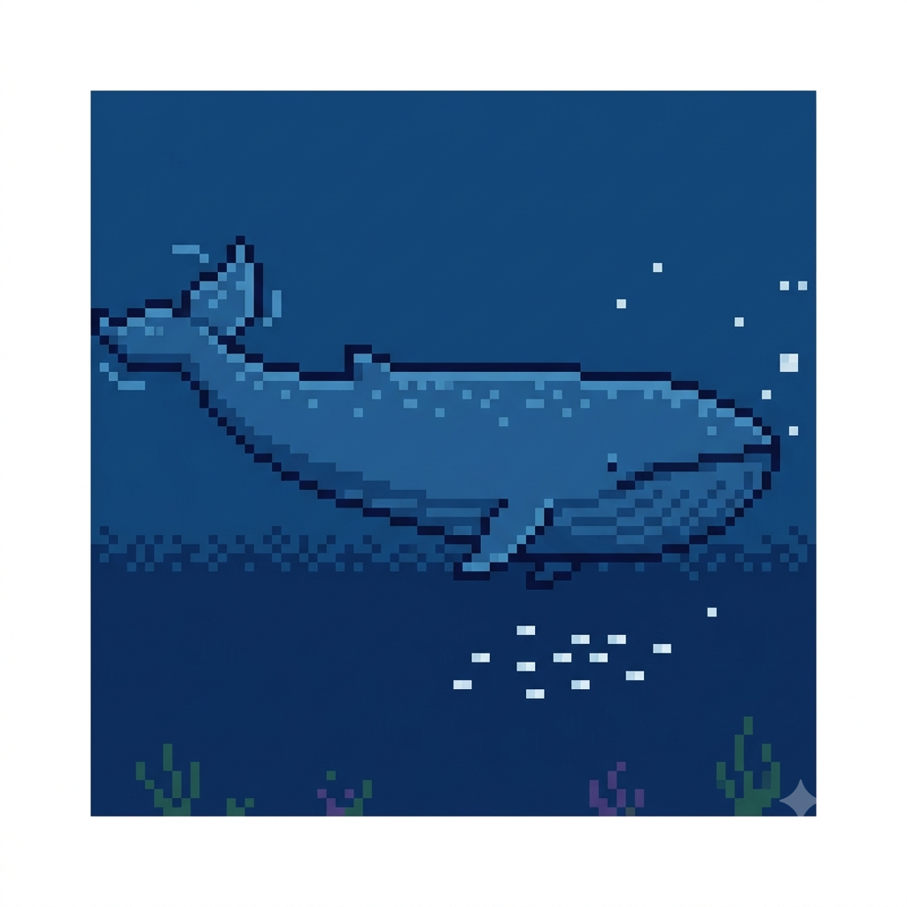

O gigante do oceano
Por: Idriene do Rosario Luiz
A baleia-azul é o maior animal que já existiu no planeta Terra, superando até mesmo os maiores dinossauros. O seu coração pode ter o tamanho de um carro pequeno!
Fonte: National Geographic